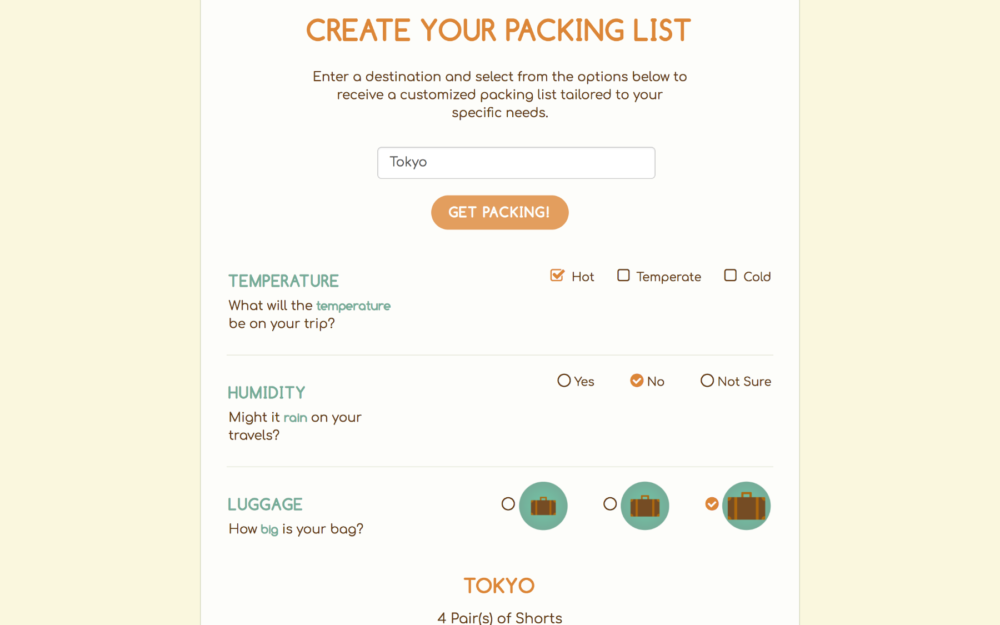

Packpartout is a packing list for world travelers who aren't quite sure what to take with them on their next trip. To use Packpartout, type in the destination of your next trip and click on "Get Packing". As you answer questions, the site will interactively present a suggested packing list, updating instantly depending on your input. Packpartout was built in 3 1/2 days.
Packpartout was built with the idea that travel is fun and exciting, so it was important for us to have that feeling resonate with the viewer. We aimed for a site that felt welcoming, bright, and optimistic. The name Packpartout is a play on words, after the valet Passepartout from Around the World in Eighty Days by Jules Verne. Since Around the World in Eighty Days was written in the late 19th century, we incorporated a Victorian steampunk theme into our site. Exploring typography, colors, vector manipulation, and wireframing, I brought together the visual identity and branding of Packpartout.
On the development end, the biggest hurdle we encountered was geting the packing list information to change immediately on the page when a user chose an option. It was one of our MVP features, and we worried that we wouldn't be able to get that feature added to the site on time. We didn't want users to feel locked in to a certain packing list, we wanted the packing list to respond immediately depending on the whims of our users — whether they changed their minds or chose the wrong answer. Our breakthrough was finding the .change() jQuery method, which thankfully allowed us to implement that feature.
While I was familiarizing myself with InVision and Sketch, I decided to revisit Packpartout and turn it into a prototype of an iOS application. The icons shown in the app were not in the original site, but made especially for this app mock up in Sketch. In the InVision prototype, users can sign in or sign up, start a new packing list, answer a question, and receive a tailored packing list.
{kind=link}
{kind=link}
{kind=link}